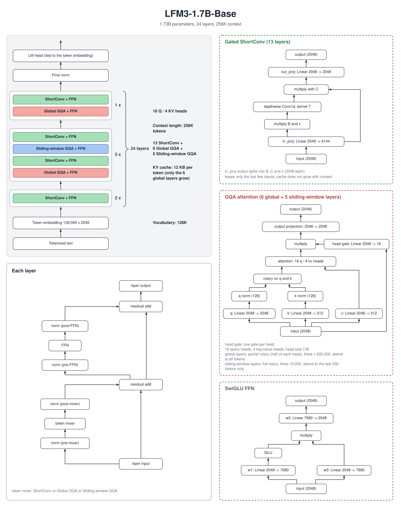

LFM3-1.7B-Base
LiquidAI/LFM3-1.7B-Base · released 26 Oct 2026 · read at commit 7bca503882
Key facts verified
- parameters
- 1.73B
- active per token (dense)
- all
- layers
- 24
- context tokens
- 262,144
- cache / token
- 12 KiB
In short
13 Gated short conv layers (kernel 7), 6 Global attention layers (GQA), 5 Sliding-window attention layers (window 256).
Layer by layer
Layer 1 is on the left.
- 13 Gated short conv
- 6 Global attention
- 5 Sliding-window attention
Diagram
Drawn by Gemini from verified fields, 24 of 24 checks passed · Open full size


Will it fit on my machine?
Weights plus the cache that grows with context, for one conversation. Runtime overhead is not included.
Context length
Weight precision
3.60 GiB
weights 3.22 GiB
cache 387 MiB
- 8 GB laptopfits
- 16 GB laptopfits
- 24 GB GPUfits
Weights = 1,728,801,536 parameters × bytes per parameter. Cache = 12,288 B per token × context + 2.86 MiB of fixed-size state, bf16. "Tight" means over 75% of the device's memory.
Facts and where they come from
Verified means two independent files agree.
| Fact | Value | Read from | Status |
|---|---|---|---|
| Total parametersweight file headers: sum of tensor shapes | 1,728,801,536 | weight file headers, model card | verified |
| Layersnum_hidden_layers | 24 | config.json, weight file headers | verified |
| Layer mixlayer_types | 13 Short conv, 6 Global attention, 5 Sliding window | config.json, model card | verified |
| Context lengthmax_position_embeddings | 262,144 | config.json, model card | verified |
| Hidden size (width)hidden_size | 2,048 | config.json, weight file headers | verified |
| Attention type and headsnum_attention_heads | GQA · 16 heads (4 key-value) | config.json | one source |
| Cache per tokenbf16; sliding-window and constant states excluded | 12,288 B | ArchWatch calculator | computed |
All 21 fields
| Fact | Value | Read from | Status |
|---|---|---|---|
| Activation functionmodeling code: modeling_lfm3.py#L157 | silu | modeling code | one source |
| Architecture name in the configmodel_type | lfm3 | config.json | one source |
| Convolution widthconv_L_cache | 7 | config.json, weight file headers | verified |
| Designlayer_types | Hybrid (dense) | config.json | one source |
| FFN hidden sizeintermediate_size | 7,680 | config.json, weight file headers | verified |
| Gate on the attention outputmodeling code: modeling_lfm3.py#L231 | yes | modeling code, weight file headers | verified |
| Gated FFNweight file headers: FFN gate/up/down tensor layout | yes | weight file headers | one source |
| Head sizehead_dim | 128 | config.json | one source |
| Input and output embeddings sharedtie_word_embeddings | yes | config.json | one source |
| Norm before and after each blockuse_sandwich_norm | yes | config.json, weight file headers | verified |
| Normalised queries and keysmodeling code: modeling_lfm3.py#L230 | yes | modeling code, weight file headers | verified |
| Position encodingrope_parameters | full attention: partial rotary factor: 0.5; rope theta: 1,000,000; rope type: default; sliding attention: rope theta: 10,000; rope type: default | config.json | one source |
| Released weight formatdtype | bfloat16 | config.json | one source |
| Sliding windowsliding_window | 256 | config.json | one source |
| Vocabularyvocab_size | 128,000 | config.json, model card, weight file headers | verified |